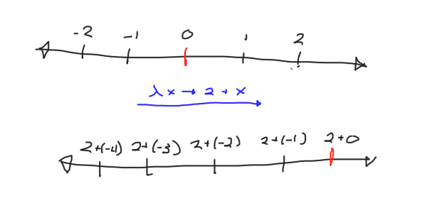

Monoids: Transformations in Disguise
Table of Contents
1 Monoids
If you've written any haskell, you are probably well versed with the concept of a Monoid, and how unreasonably effective they are at solving problems. They show up absolutely everywhere, and can make a lot of problems dissolve right before your eyes. However, this post is not about their concrete applications, but rather a meander through the theoretical woods, where we instead try to discover why they are so effective, and explore an alternative perspective on our friend the Monoid.
To start, some recap. The dry, technical definition is as follows:
A monoid is a set equipped with an associative binary operation and an identity element.
The slightly less dry version is:
A monoid is a set equipped with a means of combining two elements together, along with a sort of neutral elemement. Combining this neutral element with anything does nothing!
We represent this notion in Haskell as a typeclass1:
class Monoid a where
mempty :: a
(<>) :: a -> a -> a
No less important are the laws! There are 3:
(a <> b) <> c ≈ a <> (b <> c) mempty <> a ≈ a a <> mempty ≈ mempty
As a slight digression, you may be wondering what that wonky ≈
symbol means! I use this notation to stress that what we mean by
"equality" here is not nessicarily Haskell's version, va ==. As we
can't reason about proofs within haskell (yet!), so we have to do our
reasoning elsewhere. If this seems confusing, don't worry! It's a
tricky concept, and we will get into more detail in a moment.
Now, there are a plethora of instances here, including some of the
greatest hits: [a], Sum Int, Prod Int, etc, as well as some more
exotic ones that we won't delve into now.
2 Homomorphisms
This is where we start to leave Haskell, and explore more uncharted territory. To start, let us examine a handful of functions that feel very fundemental:
length :: [a] -> Int isEmpty :: [a] -> Bool isOdd :: Int -> Bool
Now, a philosophical question: Why do these functions feel "nicer" than something like:
gross :: [a] -> Int gross [x,y,z] = 4 gross [] = 3 gross xs = 84
I claim that this is because all of the nice functions take monoids as their inputs, return monoids as their output, and "preserve" the structure of the monoid in the following sense:
length [] ≈ 0 length (xs ++ ys) = length xs + length ys isEmpty [] ≈ True isEmpty (xs ++ ys) ≈ isEmpty xs && isEmpty ys isOdd 0 ≈ False isOdd (x + y) ≈ isOdd x || isOdd y
Looking at the pattern, we can see that a function f : a -> b is "nice" if
the following laws hold:
f (a <> b) ≈ f a <> f b f mempty ≈ mempty
We call these nice functions Homomorphisms.
3 Transformations
Now, one finaly piece of equipment is required. This piece of equipment is a single Monoid instance2 :
newtype Transformation a = Transformation { runTransformation :: a -> a }
instance Semigroup (Transformation a) where
(Transformation f) <> (Transformation g) = Transformation $ f . g
instance Monoid (Transformation a) where
mempty = Transformation id
Once we peel back all of the ceremony involved with the newtypes, we
can see that the core idea is rather simple! Our set is a -> a, and our
identity element is id : a -> a. Now, before we can ponder the laws,
we need to think about what it means for two functions to be equal in
the first place! This is a suprisingly tricky question, and one that I
could devote a lot of time to, but that is for another day! For now,
let us consider two functions equal if the "behave the same". This
means that we will consider f and g equal if the have the same
outputs for every input, or forall x. f x ≈ g x.
Now that we have decided what it means for two functions are equal, let's prove those laws!
associativity: ((f . g) . h) x ≈ -- By definition of (.) (\y -> (f . g) (h y)) x ≈ -- β-reduction (f . g) (h x) ≈ -- By definition of (.) (\y - f (g y)) (h x) ≈ -- β-reduction f (g (h x)) ≈ -- β-expansion (\y -> f (g (h y))) x ≈ -- β-expansion (\y -> f ((\z -> g (h z)) y)) x ≈ -- By definition of (.) (\y -> f ((g . h) y)) x ≈ -- By definition of (.) (f . (g . h)) x ∎ left identity: (id . f) x ≈ -- By definition of (.) (\y -> id (f y)) x ≈ -- β-reduction id (f x) ≈ -- By definition of id (\y -> y) (f x) ≈ -- β-reduction f x ∎ right identity: (f . id) x ≈ -- By definition of (.) (\y -> f (id y)) x ≈ -- β-reduction f (id x) ≈ -- By definition of id (f ((\y -> y) x)) ≈ -- β-reduction f x ∎
If these proofs are scary, don't worry! Equational reasoning is an aquired taste, so if you are confused, feel free to move on.
4 The Punchline
Now that we have all of the machinery we need, we can talk about a
curious fact, namely, that we can view any Monoid a as a collection
of transformations a -> a!
However, the embedding into Transformation is so simple that it can be hard
to wrap your head around.
asTransformation :: Monoid a => a -> Transformation a asTransformation x = Transformation $ \y -> x <> y
I find that, like most things, drawing a picture tends to clarify
things. Let's using the Integers under addition as our first example.
What does viewing, say, 2 as a transformation look like?

As we can see, adding two shifts the whole number line to the right by two! As an exercise, think about what multiplying by two looks like as an action!
Interestingly enough, asTransformation is a Monoid Homomorphism!
Here is yet another overly detailed proof:
asTransformation (x <> y) ≈ -- By definition of asTransformation \z -> (x <> y) <> z ≈ -- Associativity of <> \z -> x <> (y <> z) ≈ -- By definition of. (x <>) . (y <>) ≈ -- By definition of asTransformation asTransformation x . asTransformation y ∎ asTransformation mempty ≈ -- By definition of asTransformation \x -> mempty <> x ≈ -- By left identity \x -> x ≈ -- By definition of id id ∎
Now, what does all of this mean? The way I like to think about it is that Monoids are nice collections of transformations. This shift in perspective gives a hint as to why they are so ubiquitous in programming: Programming is, at the end of the day, largely about transformations, so it makes sense that collections of well behaved transformations show up all over the place.
Furthermore, armed with this perspective, we can begin to explore even further, and we will in future!